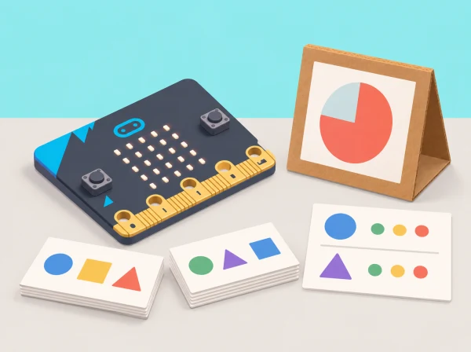

Un temporitzador d’activitats responsable
🏷️ IA, moviment i disseny responsable
🌱 Situació, repte i intenció
🎯 Aprenentatges i vocabulari
- Distingir un sistema basat en regles d’un model que aprén patrons a partir de dades.
- Netejar i separar conjunts d’entrenament i prova, documentant exclusions i condicions.
- Calcular encerts, errors i dubtes, revisar biaixos i iterar sense usar dades personals o biomètriques.
- Construir una eixida controlable per a una maqueta i presentar una model card amb usos, riscos i límits.
🧰 Materials i preparació
CreateAI, MakeCode, navegador o app compatible, micro:bit V2, alimentació i cable de dades; una segona placa pot ser necessària segons el Bluetooth de l’ordinador. El servei guarda projectes al navegador o dispositiu i el fitxer HEX pot incloure dades, model i codi. Si no es pot usar l’eina, les lliçons 1, 2, 5 i 8 continuen amb targetes; les sessions de ML es poden fer amb un classificador en paper identificat com a simulació, sense afirmar que s’ha entrenat un model.
📅 Seqüència didàctica
Parlar d’IA (Talking about AI)
Fase 1 · Activem i prediem
Presenteu la fira de ciència i el temporitzador de maqueta. Abans de definir IA, l’alumnat dibuixa què imagina que passa entre una inclinació de la base i una icona que apareix a la placa. Pregunteu quines parts creuen que decideixen persones i quines podria fer el sistema.
Fase 2 · Explorem i construïm
Classifiqueu targetes de tecnologies familiars —alarma, calculadora, mapa digital, llum amb sensor— segons si segueixen una regla explícita o si aprenen patrons amb dades. Reviseu missatges publicitaris que diuen que una màquina «entén» o «decideix com una persona» i marqueu quines afirmacions caldria comprovar.
Fase 3 · Expliquem i registrem
Compareu les classificacions i descriviu una regla fixa amb l’estructura «si passa X, fes Y». Distingiu aquesta instrucció d’un model entrenat amb exemples i anoteu en un diagrama qui defineix les classes, tria les dades i decideix què significa el resultat.
Fase 4 · Apliquem i millorem
Escriviu en equip una definició pròpia d’IA i una de ML per a la fira. Reviseu-les amb una parella: elimineu expressions que atribuïsquen intencions o comprensió humana al model i afegiu-hi un exemple de regla fixa per contrastar-les.
Fase 5 · Comprovem i reflexionem
Importància de les dades (Exploring AI: the importance of data)
Fase 1 · Activem i prediem
Recupereu el temporitzador i pregunteu quina informació necessitaria per mostrar una icona. Cada equip prediu si cal registrar la identitat, l’edat o qualsevol dada personal per reconéixer l’orientació d’una maqueta.
Fase 2 · Explorem i construïm
Ordeneu targetes fictícies amb diverses regles —per exemple, direcció, angle o durada— i proveu una classificació que use només una característica cada vegada. Incloeu targetes incompletes o amb dues característiques barrejades perquè el grup decidisca si pot classificar-les.
Fase 3 · Expliquem i registrem
Compareu els resultats de cada regla i anoteu quines targetes canvien de grup. Parleu de consentiment, context, minimització i usos inesperats; identifiqueu les dades que no caldria recollir per a un temporitzador d’exposició.
Fase 4 · Apliquem i millorem
Revisiteu el protocol del temporitzador i traieu qualsevol dada que no servisca per a respondre a l’orientació de l’objecte. Escriviu una regla d’eliminació de dades i una situació en què no s’hauria de reutilitzar el conjunt recollit.
Fase 5 · Comprovem i reflexionem
Avaluar les dades (Exploring ML: evaluating data)
Fase 1 · Activem i prediem
Definiu el propòsit limitat: reconéixer dues orientacions d’una maqueta per canviar un panell. Acordeu què vol dir cada etiqueta i quina posició quedarà «sense classe». Predigueu quina mostra podria resultar ambigua si es comença des d’una posició diferent.
Fase 2 · Explorem i construïm
Poseu la micro:bit sobre una base de cartó marcada amb dos angles i recolliu mostres amb el seu acceleròmetre en CreateAI. Manteniu la mateixa posició inicial per al primer conjunt, useu codis anònims i registreu diverses repeticions de cada orientació. No demaneu que ningú faça un gest corporal concret.
Fase 3 · Expliquem i registrem
Reviseu les dades i localitzeu mostres amb orientació errònia o amb dues classes barrejades. Per a cada mostra dubtosa, anoteu si el problema és l’etiqueta, el moviment de la placa durant la captura o una mostra incompleta.
Fase 4 · Apliquem i millorem
Netegeu les mostres que no representen la classe definida i documenteu el motiu d’exclusió. Si la confusió ve del protocol, corregiu la posició inicial i feu una nova captura controlada en lloc d’afegir dades indistintes.
Fase 5 · Comprovem i reflexionem
Provar l’exactitud (Exploring ML: testing accuracy)
Fase 1 · Activem i prediem
Separeu abans d’entrenar les mostres que es reservaran per a la prova. Predigueu quina classe podria confondre’s i expliqueu per què no s’haurien d’usar les dades de prova per ajustar el model.
Fase 2 · Explorem i construïm
Entreneu el model amb el conjunt assignat i proveu-lo amb mostres que no s’han usat per entrenar. Per cada intent, anoteu classe esperada, resposta del model i si és encert, error o dubte.
Fase 3 · Expliquem i registrem
Completeu una targeta de resultats amb recompte per classe. Debateu què permet concloure eixa mostra i què no, especialment si hi ha pocs casos o una classe té menys exemples. Distingiu exactitud del model i validesa del propòsit.
Fase 4 · Apliquem i millorem
Reviseu si les dades de moviment del dispositiu són apropiades per al prototip i quin consentiment i control calen. Proposeu una millora concreta del protocol i torneu a provar amb un conjunt nou, sense barrejar-lo amb les mostres reservades inicialment.
Fase 5 · Comprovem i reflexionem
Considerar biaixos (Exploring ML: considering bias)
Fase 1 · Activem i prediem
Presenteu un cas fictici: el model ha vist només una orientació estable i confon una altra inclinació de la base. Predigueu què pot passar si el temporitzador s’exposa en una taula diferent o si la maqueta es mou més lentament.
Fase 2 · Explorem i construïm
Amb targetes de prova inventades, variegeu angle, velocitat o suport, una característica cada vegada. Classifiqueu els resultats correctes, les confusions i els casos sense resposta; no useu dades personals ni inferiu característiques de qui manipula el dispositiu.
Fase 3 · Expliquem i registrem
Formuleu preguntes per revisar biaix i dades absents: quines condicions no apareixen?, quina classe té menys mostres?, a qui podria perjudicar un fals resultat si algú l’aplicara fora de la maqueta? Registreu cada hipòtesi amb una evidència del conjunt fictici.
Fase 4 · Apliquem i millorem
Redissenyeu el protocol perquè represente millor les variacions de la maqueta i proposeu una prova que podria refutar la vostra hipòtesi. Manteniu l’avís que el model no classifica persones ni serveix per a prendre decisions sobre elles.
Fase 5 · Comprovem i reflexionem
Fer millores (Exploring ML: making improvements)
Fase 1 · Activem i prediem
Reviseu la targeta de resultats i trieu un buit concret observat, com una orientació que apareix poc o una transició confosa. Escriviu quina classe podria millorar i quin resultat indicaria que la predicció era incorrecta.
Fase 2 · Explorem i construïm
Afegiu només les dades que resolen el buit observat. Comproveu etiquetes, condicions de captura i proporció entre classes abans d’entrenar de nou; no augmenteu totes les dades sense una justificació.
Fase 3 · Expliquem i registrem
Compareu la targeta d’exactitud abans i després, amb nombre de casos per classe, encerts, errors i dubtes. Marqueu si el resultat millora en la classe prevista i si apareix una regressió en una altra.
Fase 4 · Apliquem i millorem
Si la millora no és consistent, preserveu la versió original, repetiu la prova amb un conjunt diferent i expliqueu la incertesa. Decidiu si convé redefinir l’etiqueta, corregir el muntatge o mantindre l’eixida neutral.
Fase 5 · Comprovem i reflexionem
Programar amb el model (Exploring ML: coding with your model)
Fase 1 · Activem i prediem
Recupereu les classes del model i dibuixeu què hauria de mostrar el temporitzador per a cada orientació. Predigueu també què veurà l’usuari quan no hi haja classificació i com podrà aturar o reiniciar el sistema.
Fase 2 · Explorem i construïm
Incorporeu les etiquetes ML a MakeCode i programeu un temporitzador visual curt per a la maqueta. Definiu tres estats clars: preparat, activitat de maqueta i pausa/aturat; useu una icona i una durada breu, sense calcular puntuacions.
Fase 3 · Expliquem i registrem
Traceu el flux de les entrades del model fins a cada estat. Afegiu «sense classificar» com a eixida neutral i comproveu que no activa el temporitzador per error. Registreu les transicions esperades abans d’executar el programa.
Fase 4 · Apliquem i millorem
Afegiu pausa manual i botó d’aturada, que ha de funcionar des de qualsevol estat. Proveu el codi en micro:bit i verifiqueu que es pot usar sense seguir cap activitat corporal real; si no hi ha dispositiu compatible, marqueu clarament la prova com a simulació.
Fase 5 · Comprovem i reflexionem
Avaluar disseny i impactes (Evaluating AI project design and impacts)
Fase 1 · Activem i prediem
Abans de presentar el prototip, cada equip prediu quina pregunta crítica pot fer una persona visitant sobre dades, errors o ús del temporitzador. Reviseu el propòsit i confirmeu que està restringit a la maqueta.
Fase 2 · Explorem i construïm
Completeu una fitxa del model amb propòsit, origen i tractament de dades, categories, resultats, límits i impactes possibles. Incloeu les dades excloses, el conjunt de prova separat i les opcions d’aturada manual.
Fase 3 · Expliquem i registrem
Presenteu el sistema com una combinació de dades, model, codi i maquinari. Mostreu els resultats agregats, expliqueu una confusió i responeu quines parts continuen sota control humà; no projecteu dades brutes ni identificables.
Fase 4 · Apliquem i millorem
Rebeu preguntes d’una altra parella i reviseu la fitxa per fer explícit qualsevol límit que no s’havia entés. Decidiu quines circumstàncies invalidarien una resposta o exigirien aturar el temporitzador.
Fase 5 · Comprovem i reflexionem
Codi del temporitzador i model card
En la sessió 7, definiu tres estats: «preparat», «activitat de maqueta» i «pausa/aturat». El programa només mostra una icona i una durada breu després d'una classificació prevista; quan el model no reconeix el patró, roman en estat neutral i espera una acció manual. Proveu cada transició i assegureu-vos que el botó d'aturada funciona des de qualsevol estat. No s'envia cap alerta ni es calcula cap puntuació.
La targeta del model final conté: propòsit restringit, dades usades i dades excloses, etiquetes i qui les va definir, com s'han netejat mostres, conjunt de prova separat, encerts/errors/dubtes, limitacions i possibles efectes si algú intentara usar-lo amb persones. Una parella revisora ha de poder identificar en menys d'un minut per a què serveix el model i per a què no serveix. L'exposició mostra només resultats anònims del prototip, sense dades brutes identificables.
🧪 Evidències i avaluació
Carpeta amb classificació desconnectada, categories i etiquetes, mostres netejades, targetes de prova, codi amb estat neutral, model card i reflexió sobre impacte. Valoreu la comprensió del paper de les dades, la diversitat de proves, la depuració i la comunicació dels límits, no l’exactitud absoluta del model.
Registre de dades i seqüència de proves
En les sessions 1 i 2, distingiu una regla fixa («si la targeta mostra una inclinació, classifica-la com a A») d'un model que ajusta patrons a exemples. Classifiqueu targetes fictícies de moviments i discutiu dues ordenacions possibles. Acordeu abans de recollir res què significa cada classe, qui controla les dades i com s'elimina el fitxer de prova. Si CreateAI no està disponible, conserveu les discussions i useu fitxes com a simulació; no anomeneu «entrenat» el classificador de paper.
En la sessió 3, poseu la micro:bit damunt d'una base de cartó marcada amb dos angles i recolliu diverses mostres de cada orientació, sempre amb la mateixa posició inicial. Identifiqueu una mostra mal etiquetada o un moviment que barreja les dues categories. Abans d'eliminar-la, escriviu una raó verificable: etiqueta equivocada, placa que s'ha mogut durant la captura o mostra incompleta. Eviteu noms de fitxer amb identitats i no demaneu que cap alumne faça un gest físic concret.
En la sessió 4, separeu les mostres de prova de les dades d'entrenament. Registreu nombre de proves, encerts, errors i casos dubtosos; expliqueu què no es pot inferir d'una mostra petita. En la sessió 5, reviseu un cas de biaix de dades fictici: un model ha vist només una orientació i classifica malament una altra. Pregunteu qui podria quedar fora si el prototip s'utilitzara amb persones i decidiu no fer eixe ús.
En la sessió 6, afegiu exemples que cobreixen la variació de la maqueta, torneu a provar amb un conjunt nou i compareu els resultats sense ocultar cap regressió.
♿ Participació, accessibilitat i seguretat
Useu dades anònimes de moviments d’un objecte o maqueta sempre que siga possible. No enregistreu noms, imatges, veu ni dades de salut; cap moviment ni prova és obligatori. No compartiu fitxers amb dades brutes fora del dispositiu del centre i esborreu-los segons la pauta docent. El temporitzador no és un assessor d’exercici, no mesura rendiment i no ha de classificar persones.
🔗 Referents i adaptació
Aquesta situació adapta les vuit lliçons de micro:bit Developing AI literacy with the micro:bit: parlar d’IA, dades, recollir/netejar, provar, biaix, millorar, programar amb el model i avaluar disseny/impacte. El context de maqueta, l’ús de dades d’objecte i els criteris del temporitzador són propis.